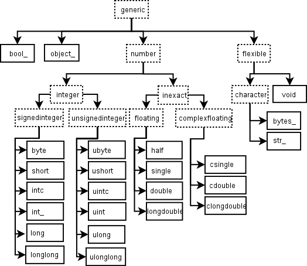

Скаляры#
Для каждой категории данных Python определяет только один тип: один целочисленный, один с плавающей точкой и т. д. Это удобно для приложений, которым неважны все особенности представления данных в компьютере. Но в научных вычислениях часто требуется более точный контроль.
NumPy вводит 24 базовых типа Python для представления различных скалярных значений. Эти дескрипторы типов в основном основаны на типах языка C, на котором написан CPython; кроме того, предусмотрено несколько дополнительных типов, совместимых с типами Python.
Скаляры NumPy имеют те же атрибуты и методы, что и ndarrays. [1] Это позволяет в некоторой степени работать с элементами массива так же, как с массивами, сглаживая различия при смешивании скалярных операций и операций над массивами.
Скаляры NumPy образуют иерархию типов данных (см. рисунок ниже). По этой иерархии можно определять их тип: например, isinstance(val, np.generic) возвращает True, если val — скаляр NumPy. Другие элементы иерархии позволяют уточнить его категорию. Например, isinstance(val, np.complexfloating) возвращает True, если val имеет комплексный тип, а isinstance(val, np.flexible) возвращает истинное значение, если val относится к одному из типов с гибким размером элемента: str_, bytes_ или void.

Подписи на рисунке: Иерархия скалярных типов NumPy. Английские названия узлов, например generic, integer и floating, — имена классов API; они сохраняются при использовании в коде.Рисунок: иерархия объектов типов, представляющих типы данных массивов. Не показаны целочисленные типы intp и uintp для индексирования (с NumPy 2 соответствуют стандартным целочисленным типам).#
Встроенные скалярные типы #
Встроенные скалярные типы показаны ниже. С-подобные имена связаны с кодами символов, которые показаны в их описаниях. Использование кодов символов, однако, не рекомендуется.
Некоторые скалярные типы по сути эквивалентны базовым типам Python, поэтому наследуются и от них, и от общего типа скаляров массивов:
Тип скаляра NumPy |
Соответствующий тип Python |
Наследует? |
|---|---|---|
нет |
||
да. |
||
да. |
||
да. |
||
да. |
||
нет |
||
нет |
||
нет |
Тип данных bool_ очень похож на тип bool в Python, но не наследует его, поскольку тип bool в Python не допускает наследования. Кроме того, на уровне C размер данных bool отличается от размера булева скаляра Python.
Предупреждение
Тип int_ не наследуется от встроенного типа int, поскольку int не является целочисленным типом фиксированной разрядности.
Совет
Тип данных по умолчанию в NumPy — double.
- class numpy.generic[source]#
Базовый класс скалярных типов NumPy.
Класс, от которого наследует большинство (все?) скалярных типов NumPy. Для единообразия предоставляет тот же API, что и
ndarray, хотя многие атрибуты доступны только для чтения или вовсе неприменимы. Пользователям настоятельно рекомендуется наследовать собственные скалярные типы именно от этого класса.
Целочисленные типы#
Примечание
Целочисленные типы NumPy повторяют поведение целых чисел C, поэтому для них возможны ошибки переполнения.
Знаковые целочисленные типы #
- class numpy.signedinteger[source]#
Абстрактный базовый класс всех целочисленных скалярных типов со знаком.
- class numpy.byte[source]#
int8(value=0, /) –
Целочисленный тип со знаком, совместимый с C
char.- Код символа :
'b'- Каноническое имя:
- Псевдоним на этой платформе (Linux x86_64):
numpy.int8: 8-битное целое число со знаком (от-128до127).
- class numpy.short[source]#
int16(value=0, /) –
Целочисленный тип со знаком, совместимый с C
short.- Код символа :
'h'- Каноническое имя:
- Псевдоним на этой платформе (Linux x86_64):
numpy.int16: 16-битное целое число со знаком (от-32_768до32_767).
- class numpy.intc[source]#
int32(value=0, /) –
Целочисленный тип со знаком, совместимый с C
int.- Код символа :
'i'- Каноническое имя:
- Псевдоним на этой платформе (Linux x86_64):
numpy.int32: 32-битное знаковое целое число (от-2_147_483_648до2_147_483_647).
- class numpy.int_[source]#
int64(value=0, /) –
Целочисленный тип со знаком, совместимый с C
long.- Код символа :
'l'- Каноническое имя:
- Псевдоним на этой платформе (Linux x86_64):
numpy.int64: 64-битное целое число со знаком, от-9_223_372_036_854_775_808до9_223_372_036_854_775_807.- Псевдоним на этой платформе (Linux x86_64):
numpy.intp: целочисленный тип со знаком, достаточно большой для хранения указателя; совместим с типом Cintptr_t.
Беззнаковые целочисленные типы#
- class numpy.unsignedinteger[source]#
Абстрактный базовый класс всех беззнаковых целочисленных скалярных типов.
- class numpy.ubyte[source]#
uint8(value=0, /) –
Целочисленный тип без знака, совместимый с C
unsigned char.- Код символа :
'B'- Каноническое имя:
- Псевдоним на этой платформе (Linux x86_64):
numpy.uint8: 8-разрядное беззнаковое целое число (от0до255).
- class numpy.ushort[source]#
uint16(value=0, /) –
Целочисленный тип без знака, совместимый с C
unsigned short.- Код символа :
'H'- Каноническое имя:
- Псевдоним на этой платформе (Linux x86_64):
numpy.uint16: 16-битное беззнаковое целое число (от0до65_535).
- class numpy.uintc[source]#
uint32(value=0, /) –
Целочисленный тип без знака, совместимый с C
unsigned int.- Код символа :
'I'- Каноническое имя:
- Псевдоним на этой платформе (Linux x86_64):
numpy.uint32: 32-битное целое число без знака (от0до4_294_967_295).
- class numpy.uint[source]#
uint64(value=0, /) –
Беззнаковый целочисленный тип: 64 бита в 64-битных системах и 32 бита в 32-битных.
- Код символа :
'L'- Каноническое имя:
- Псевдоним на этой платформе (Linux x86_64):
numpy.uint64: 64-разрядное беззнаковое целое число (от0до18_446_744_073_709_551_615).- Псевдоним на этой платформе (Linux x86_64):
numpy.uintp: беззнаковое целое число, достаточное для хранения указателя, совместимое сuintptr_tв C.
Неточные типы #
- class numpy.inexact[source]#
Абстрактный базовый класс всех числовых скалярных типов, которые могут неточно представлять значения своего диапазона, например чисел с плавающей точкой.
Примечание
Скаляры неточных типов выводятся с минимальным числом десятичных цифр, позволяющим отличить их значение от других значений того же типа данных; для этого используется подходящее округление. См. параметр unique функций format_float_positional и format_float_scientific.
Это означает, что переменные с одинаковыми двоичными значениями, но типы данных которых имеют разную точность, могут отображаться по-разному:
>>> import numpy as np
>>> f16 = np.float16("0.1")
>>> f32 = np.float32(f16)
>>> f64 = np.float64(f32)
>>> f16 == f32 == f64
True
>>> f16, f32, f64
(0.1, 0.099975586, 0.0999755859375)
Ни одно из этих чисел с плавающей точкой не хранит точное значение \(\frac{1}{10}\). Значение f16 выводится как 0.1, поскольку это ближайшее представимое к нему значение. У других типов вывод иной: они обладают большей точностью и могут представить числа, ещё более близкие к этому значению.
И наоборот, скаляры с плавающей точкой разной точности, приближающие одно десятичное значение, могут оказаться неравными при сравнении, хотя выводятся одинаково:
>>> f16 = np.float16("0.1")
>>> f32 = np.float32("0.1")
>>> f64 = np.float64("0.1")
>>> f16 == f32 == f64
False
>>> f16, f32, f64
(0.1, 0.1, 0.1)
Типы с плавающей точкой#
- class numpy.half[source]#
float16(value=0, /) –
Тип числа с плавающей точкой половинной точности.
- Код символа :
'e'- Каноническое имя:
- Псевдоним на этой платформе (Linux x86_64):
numpy.float16: 16-битный тип числа с плавающей точкой: бит знака, 5 бит порядка и 10 бит мантиссы.
- class numpy.single[source]#
float32(value=0, /) –
Тип числа с плавающей точкой одинарной точности, совместимый с
floatв C.- Код символа :
'f'- Каноническое имя:
- Псевдоним на этой платформе (Linux x86_64):
numpy.float32: 32-битный тип числа с плавающей точкой: бит знака, 8 бит порядка и 23 бита мантиссы.
- class numpy.double(x=0, /)[source]#
float64(value=0, /) –
Тип чисел с плавающей точкой двойной точности, совместимый с
floatPython иdoubleC.- Код символа :
'd'- Каноническое имя:
- Псевдоним на этой платформе (Linux x86_64):
numpy.float64: 64-битный тип с плавающей точкой — 1 бит знака, 11 бит порядка и 52 бита мантиссы.
- class numpy.longdouble(value=0, /)[source]#
Тип числа с плавающей точкой расширенной точности, совместимый с
long doubleв C, но не обязательно с четверной точностью IEEE 754.- Код символа :
'g'- Псевдоним на этой платформе (Linux x86_64):
numpy.float128: 128-битный тип числа с плавающей точкой расширенной точности.
Комплексные типы с плавающей точкой#
- class numpy.complexfloating[source]#
Абстрактный базовый класс всех скалярных типов комплексных чисел, состоящих из чисел с плавающей запятой.
- class numpy.csingle[source]#
complex64(real=0, imag=0, /) –
Тип комплексного числа, состоящий из двух чисел одинарной точности с плавающей запятой.
- Код символа :
'F'- Каноническое имя:
- Псевдоним на этой платформе (Linux x86_64):
numpy.complex64: тип комплексных чисел, состоящих из двух 32-битных чисел с плавающей запятой.
- class numpy.cdouble(real=0, imag=0)[source]#
complex128(real=0, imag=0, /) –
Комплексный тип, состоящий из двух чисел с плавающей точкой двойной точности, совместимый с типом
complexв Python.- Код символа :
'D'- Каноническое имя:
- Псевдоним на этой платформе (Linux x86_64):
numpy.complex128: тип комплексного числа из двух 64-битных чисел с плавающей точкой.
- class numpy.clongdouble(real=0, imag=0, /)[source]#
Комплексный тип, состоящий из двух чисел с плавающей запятой расширенной точности.
- Код символа :
'G'- Псевдоним на этой платформе (Linux x86_64):
numpy.complex256: Тип комплексного числа, состоящий из двух 128-битных чисел с плавающей запятой повышенной точности.
Другие типы #
- class numpy.bool(value=False, /)[source]#
Булевый тип (True или False), хранящийся в виде байта.
Предупреждение
Тип
boolне является подклассом типаint_(boolдаже не является типом числа).Это отличается от реализации Python по умолчаниюboolкак подклассаint.- Код символа :
'?'
- class numpy.datetime64(value=None, *args)[source]#
При создании из 64-битного целого числа значение задаёт смещение относительно
1970-01-01T00:00:00. При создании из строки допускается формат даты или даты и времени ISO 8601.При разборе строки для создания объекта datetime часовой пояс в конце строки («Z» или смещение) отбрасывается с выдачей UserWarning.
Объекты Datetime64 должны рассматриваться как UTC и, следовательно, иметь смещение +0000.
>>> np.datetime64(10, 'Y') np.datetime64('1980') >>> np.datetime64('1980', 'Y') np.datetime64('1980') >>> np.datetime64(10, 'D') np.datetime64('1970-01-11')
Подробнее см. Даты, время и временные интервалы.
- Код символа :
'M'
- class numpy.timedelta64(value=0, *args)[source]#
Интервал времени, хранящийся как 64-битное целое число.
Подробнее см. Даты, время и временные интервалы.
- Код символа :
'm'
Примечание
В объектных массивах (то есть массивах с dtype object_) хранятся ссылки на объекты Python, а не сами объекты. Поэтому такие массивы похожи на обычные lists в Python: их содержимое может иметь разные типы Python.
Тип object также особый: при обращении к элементу массива с элементами object_ возвращается не объект object_, а сам объект, на который ссылается элемент массива.
Следующие типы данных имеют переменный размер: он не задан заранее, и длина описываемых ими данных может различаться между массивами. В символьных кодах # обозначает целое число составляющих тип элементов.
- class numpy.flexible[source]#
Абстрактный базовый класс всех скалярных типов без заранее заданной длины. Фактический размер этих типов зависит от конкретного экземпляра
numpy.dtype.
- class numpy.bytes_(value='', *args, **kwargs)[source]#
Байтовая строка.
При использовании в массивах этот тип удаляет завершающие нулевые байты.
- Код символа :
'S'
- class numpy.str_(value='', *args, **kwargs)[source]#
Строка Unicode.
Этот тип удаляет нулевые кодовые точки в конце.
>>> s = np.str_("abc\x00") >>> s 'abc'
В отличие от встроенного
str, этот тип поддерживает буферный протокол, предоставляя доступ к содержимому в формате UCS4:>>> m = memoryview(np.str_("abc")) >>> m.format '3w' >>> m.tobytes() b'a\x00\x00\x00b\x00\x00\x00c\x00\x00\x00'
- Код символа :
'U'
- class numpy.void(length_or_data, /, dtype=None)[source]#
Создаёт новый структурированный или неструктурированный скаляр void.
- Параметры:
- length_or_dataint, объект, подобный массиву, объект, подобный байтовой строке, объект
Имеет несколько возможных значений (см. примечания): длина или байтовые данные неструктурированного void либо, если задан
dtype, данные для хранения в новом скаляре. Можно передать объект array_like; тогда результатом может быть массив.- dtypedtype, необязательный
Если задан, определяет dtype нового скаляра. Это должен быть dtype void: структурированный или неструктурированный (см. также Структурированные типы данных).
Добавлено в версии 1.24.
Примечания
По историческим причинам и потому, что скаляры void могут представлять как произвольные байты, так и структурированные данные, конструктор void поддерживает три формы вызова:
np.void(5)создаёт скалярdtype="V5", содержащий пятьбайтов
\0. Число 5 может быть целым числом Python или NumPy.
np.void(b"bytes-like")создаёт скаляр void из байтовой строки.Размер элемента dtype будет совпадать с длиной байтовой строки, в данном случае
"V10".
- При передаче
dtype=вызов примерно эквивалентен создание массива. Однако возвращается скаляр void, а не массив.
- При передаче
Пожалуйста, посмотрите примеры, которые показывают все три различных соглашения.
Примеры
>>> np.void(5) np.void(b'\x00\x00\x00\x00\x00') >>> np.void(b'abcd') np.void(b'\x61\x62\x63\x64') >>> np.void((3.2, b'eggs'), dtype="d,S5") np.void((3.2, b'eggs'), dtype=[('f0', '<f8'), ('f1', 'S5')]) >>> np.void(3, dtype=[('x', np.int8), ('y', np.int8)]) np.void((3, 3), dtype=[('x', 'i1'), ('y', 'i1')])
- Код символа :
'V'
Предупреждение
Совместимость с Numeric: если в коде Numeric вы использовали старые символьные коды типов (что никогда не рекомендовалось), некоторые из них нужно заменить новыми. Необходимые замены: c -> S1, b -> B, 1 -> b, s -> h, w ->
H и u -> I. Это согласует символьные коды типов с другими модулями Python, например struct.
Псевдонимы с указанием размера#
Помимо имён, в основном заимствованных из C, целочисленные, вещественные и комплексные типы данных доступны под именами с явным указанием разрядности, что позволяет гарантировать нужный размер элементов массива. Также предусмотрены два псевдонима — numpy.intp и numpy.uintp — для целочисленного типа, достаточно большого для хранения указателя C.
- numpy.int8[source]#
- numpy.int16#
- numpy.int32#
- numpy.int64#
Псевдонимы для целочисленных типов со знаком (один из
numpy.byte,numpy.short,numpy.intc,numpy.int_,numpy.longиnumpy.longlong) с указанным количеством бит.Совместим с C99
int8_t,int16_t,int32_tиint64_tсоответственно.
- numpy.uint8[source]#
- numpy.uint16#
- numpy.uint32#
- numpy.uint64#
Псевдоним беззнакового целочисленного типа (одного из
numpy.ubyte,numpy.ushort,numpy.uintc,numpy.uint,numpy.ulongиnumpy.ulonglong) с заданным числом битов.Совместим с C99
uint8_t,uint16_t,uint32_tиuint64_tсоответственно.
- numpy.intp[source]#
Псевдоним знакового целочисленного типа — одного из
numpy.byte,numpy.short,numpy.intc,numpy.int_,numpy.longиnumpy.longlong, — используемого по умолчанию для целых чисел и индексирования.Совместим с C
Py_ssize_t.- Код символа :
'n'
Изменено в версии 2.0: До NumPy 2 размер этого типа совпадал с размером указателя. На практике размеры почти всегда совпадают, однако символьный код
'p'соответствует типу Cintptr_t. Символьный код'n'добавлен в NumPy 2.0.
- numpy.uintp[source]#
Псевдоним беззнакового целочисленного типа того же размера, что и
intp.Совместим с C
size_t.- Код символа :
'N'
Изменено в версии 2.0: До NumPy 2 размер этого типа совпадал с размером указателя. На практике размеры почти всегда совпадают, однако символьный код
'P'соответствует типу Cuintptr_t. Символьный код'N'добавлен в NumPy 2.0.
- numpy.float96#
- numpy.float128[source]#
Псевдоним
numpy.longdouble, названный по размеру типа в битах. Наличие этих псевдонимов зависит от платформы.
- numpy.complex192#
- numpy.complex256[source]#
Псевдоним
numpy.clongdouble, названный по размеру типа в битах. Наличие этих псевдонимов зависит от платформы.
Атрибуты#
У скалярных объектов NumPy значение array priority равно NPY_SCALAR_PRIORITY (-1 000 000,0). У них также (пока) нет атрибута ctypes. Остальные атрибуты совпадают с атрибутами массивов:
Целое значение флагов. |
|
Кортеж размеров массива по осям. |
|
Кортеж шагов в байтах по каждому измерению. |
|
Число измерений массива. |
|
Указатель на начало данных. |
|
Число элементов в gentype. |
|
Длина одного элемента в байтах. |
|
Атрибут скаляра, идентичный |
|
Получает дескриптор данных массива. |
|
Действительная часть скаляра. |
|
Мнимая часть скаляра. |
|
Одномерное представление скаляра. |
|
Атрибут скаляра, идентичный |
|
Протокол массива: сторона Python |
|
Протокол массива: struct |
|
Приоритет массива. |
|
__array_wrap__ реализация для скалярных типов |
Индексация #
См. также
Скалярные объекты NumPy можно индексировать как нульмерные массивы. Если x — такой скаляр,
x[()]возвращает копию скаляра NumPyx[...]возвращает нульмерныйndarrayx['field-name']возвращает скаляр NumPy из поля field-name. (У x могут быть поля, например, если он соответствует структурированному типу данных.)
Методы #
Скаляры массива имеют те же методы, что и массивы. По умолчанию метод преобразует скаляр в эквивалентный нульмерный массив и вызывает соответствующий метод массива. Кроме того, арифметические операции над скалярами массива устанавливают и используют те же аппаратные флаги для интерпретации результатов, что и универсальные функции. Поэтому настройки обработки ошибок универсальных функций распространяются и на арифметику скаляров массива.
Исключения из вышеуказанных правил приведены ниже:
sc.__array__(dtype) возвращает нульмерный массив заданного dtype из скаляра |
|
__array_wrap__ реализация для скалярных типов |
|
|
Скалярный метод идентичен |
|
Скалярный метод идентичен |
Вспомогательный метод для pickle. |
|
|
Скалярный метод идентичен |
Вспомогательный метод для аннотаций типов:
|
Возвращает параметризованную обёртку над типом |
Определение новых типов#
Новый скалярный тип массива можно определить двумя способами, не считая построения структурированных типов данных из встроенных скалярных типов. Первый — создать подкласс ndarray и переопределить нужные методы. Это даёт ограниченные возможности: часть поведения определяется типом данных массива. Для полной настройки нужно определить новый тип данных и зарегистрировать его в NumPy. Это возможно только на C с использованием C API NumPy.